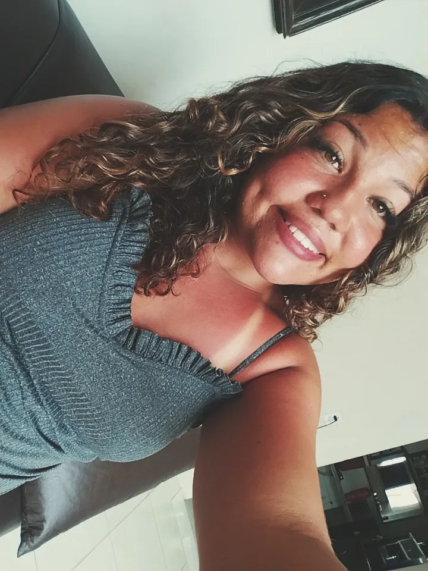

Larissa nasceu em Belo Horizonte e sempre encantou todos com seu sorriso, carinho e alegria. Desde pequena sonhava em cuidar dos animais e construir uma vida cheia de amor, fé e conquistas.
Conheça minha história
Lari sempre dizia que tinha um sonho: cuidar dos animais. Com dedicação e muitos anos de estudo, ela finalmente se formou em Medicina Veterinária. No dia da formatura, segurando o diploma nas mãos, lembrou de todas as dificuldades que enfrentou e sentiu orgulho de cada passo que a levou até ali. Depois de formada, abriu sua própria clínica veterinária. Seu carinho pelos animais e sua atenção aos donos fizeram com que seu trabalho fosse reconhecido. Com o tempo, tornou-se uma veterinária muito respeitada, ajudando centenas de animais a terem uma vida melhor.
Mas a vida de Lari não foi feita apenas de trabalho. Ela encontrou alguém que a amava, respeitava e admirava seus sonhos. Juntos construíram uma família cheia de amor, companheirismo e muitas histórias para contar. A casa deles era sempre alegre, com risadas, animais correndo pelo quintal e momentos simples que se tornaram inesquecíveis. Lari também conseguiu realizar seu grande sonho de ter um Civic G10 All Black.
Quando a clínica já estava bem estabelecida, Lari decidiu realizar outro grande sonho: conhecer o mundo. Viajou por diversos países, viu paisagens incríveis, conheceu culturas diferentes e até participou de projetos de proteção animal em lugares distantes. Caminhou pelas ruas de cidades históricas, viu o nascer do sol em praias paradisíacas e colecionou lembranças que levaria para a vida toda. Anos depois, sentada na varanda de casa, observando sua família e seus animais, Lari percebeu que havia construído exatamente a vida que sonhou quando era mais nova. Acima de tudo, reconheceu que Deus havia proporcionado cada uma dessas conquistas. Com o coração cheio de gratidão, entendeu que cada espera, desafio e oração fizeram parte do caminho até a realização dos seus sonhos.
Construi uma clínica veterinária moderna e acolhedora.
Conquistei o meu carro dos sonhos.
Tenho um lugar especial para descansar com minha família.
Conhecer diferentes culturas e países.
Clique abaixo para baixar meu currículo.
Baixar Currículo